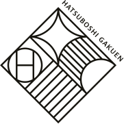

THE WORK OF
Euph
ユーフ作品集
Twitter
Email
GitHub
"An evening of images, interfaces,
and the occasional plot twist."
DOORS OPEN
SCROLL ↓
NOW SHOWING
上演中
SELECTED WORK 2020–2026
限定公演
NOW SHOWING
上演中
SELECTED WORK 2020–2026
限定公演

ACT I
近作
Recent
Work
{{ w.title }}
{{ w.meta }}
ACT II
日誌
Notes from
the Wings
{{ p.date }}
{{ p.tag }}
{{ p.title }}
READ →
{{ p.excerpt }}
CURTAIN CALL — カーテンコール
Come backstage,
say hello.
Twitter
Email
GitHub
© MMXXVI EUPH
FIN — おわり